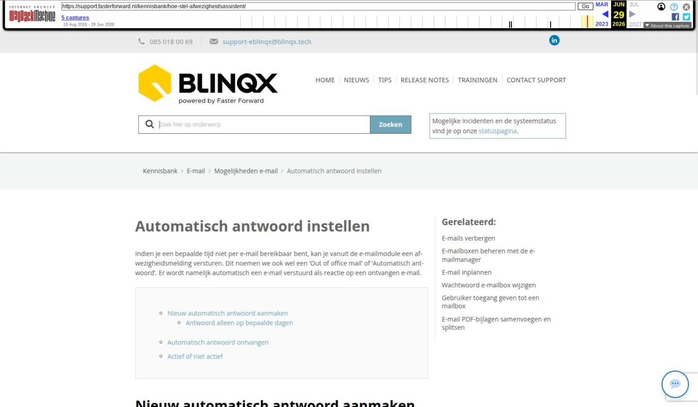

Automatisch antwoord instellen

Tekstinhoud
Automatisch antwoord instellen
Indien je een bepaalde tijd niet per e-mail bereikbaar bent, kan je vanuit de e-mailmodule een afwezigheidsmelding versturen. Dit noemen we ook wel een 'Out of office mail' of 'Automatisch antwoord'. Er wordt namelijk automatisch een e-mail verstuurd als reactie op een ontvangen e-mail.
Nieuw automatisch antwoord aanmaken
Antwoord alleen op bepaalde dagen
Automatisch antwoord ontvangen
Actief of niet actief
Nieuw automatisch antwoord aanmaken
Om een nieuw automatisch antwoord aan te maken ga je naar de e-mailmodule. Ga naar de Postvak In van het e-mailadres waarvoor je het antwoord wilt instellen. Klik onder het 'Hamburgermenu' (3 streepjes) op 'Automatisch antwoord'.
Klik op de button 'Automatisch antwoord' om een nieuw automatisch antwoord toe te voegen.
Het volgende scherm komt zichtbaar:
Naam: hier vul je de naam van het automatisch antwoord in
In periode van/Tot: vul je de periode in dat het automatisch antwoord actief is
Actief: hier geef je aan of het automatisch antwoord actief is
Antwoord alleen op bepaalde dagen: hier kan je aangeven of je het automatisch antwoord alleen op bepaalde dagen wilt sturen
E-mail: in dit tekstveld voer je de tekst in die je al automatisch antwoord wilt versturen
Met het opslaanicoon sla je het automatisch antwoord op.
Antwoord alleen op bepaalde dagen
Het kan zijn dat je dagen in de week vrij bent. Via 'Antwoord alleen op bepaalde dagen' kan je instellen dat alleen op je vrije dagen het automatisch verzonden wordt. Je kiest daar voor Ja en vinkt vervolgens de dagen aan waarop het antwoord verzonden moet worden. Het is niet mogelijk om het automatisch antwoord vanaf een bepaalde tijd te verzenden, bijvoorbeeld iedere woensdagmiddag vanaf 12.30 uur.
Automatisch antwoord ontvangen
Het automatisch antwoord wordt 1x per week verzonden naar degene die jou een e-mail stuurt. Dit geldt bij 'Antwoord op alleen bepaalde dagen' voor zowel 'Ja' als 'Nee'. Voorbeeld: je bent op vakantie van 1 september tot en met 14 september. Klant X stuurt je een e-mail op 2 september. De klant ontvangt het automatisch antwoord. Klant X stuurt je nogmaals een e-mail op 4 september. Op deze e-mail ontvangt de klant geen automatisch antwoord, want de week is nog niet voorbij. Op 12 september stuurt Klant X opnieuw een e-mail. Dan ontvangt hij het automatisch antwoord wel, want een nieuwe week is ingegaan.
Actief of niet actief
In het automatisch antwoord kan je aangeven of je deze actief of niet actief wilt zetten. Ook is het mogelijk om dit aan te geven in het hoofdscherm van automatisch antwoorden. Dit via het aan/uit-icoon. Is deze oranje dan is het automatisch antwoord actief. Grijs betekent niet actief.
Wanneer het automatisch antwoord actief staat en de periode die ingesteld staat is gaande dan wordt de regel groen.
Via het icoon met de twee blaadjes is het mogelijk om een bestaande automatisch antwoord te kopiëren.
Laatste update: 15 oktober 2025
Was deze informatie nuttig?
Ja Nee